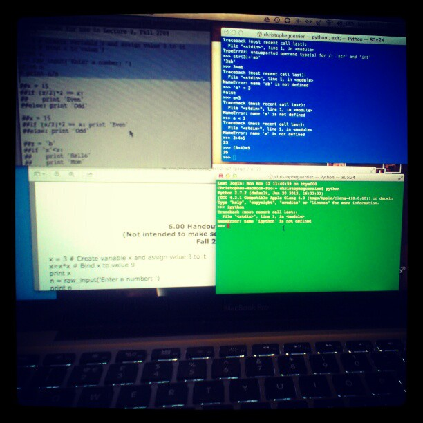
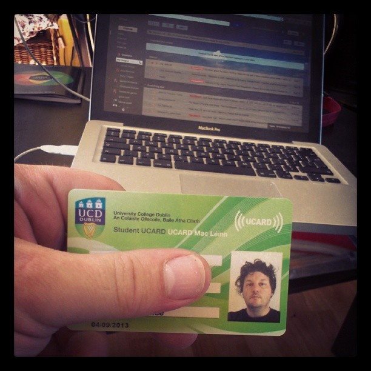
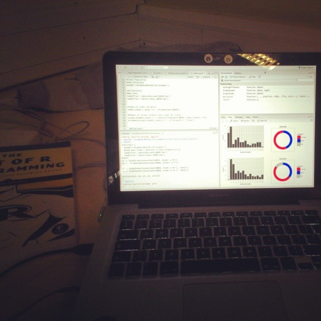
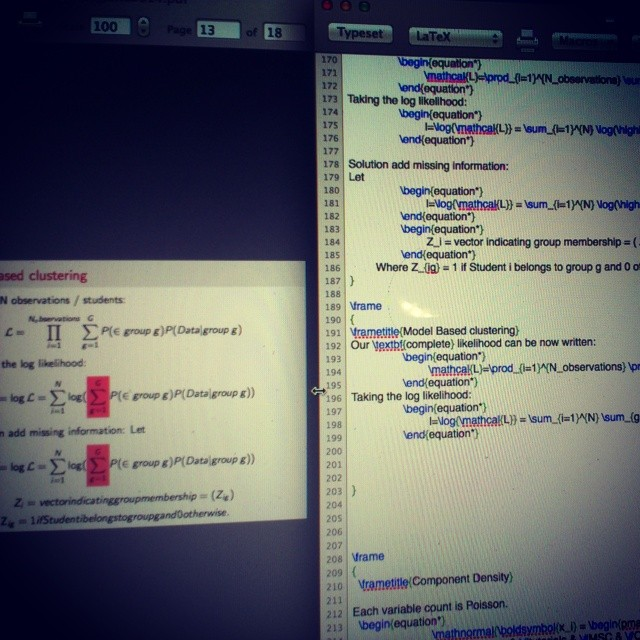

tof guerrier github page
|
| 
| 
|
|
|
|
|
| 
| 
| 
|
Bonjour, I am French from the lovely region of Auvergne, I have lived in Ireland since 2005.
I have a strong background in microelectronic engineering (Msc/DESS from Universite Blaise Pascal and 15+ years in the industry).
In 2013, I went back to college (UCD) to study Statistics.
Fell in love with python in the recent years.
For the personal part:
Scuba diving enthusiast, geek, twitter addict, amateur photographer, music lover, clumsy cyclist and waves learner - meaning I wipe out a lot.
Linkedin Profile
Github profile and repositories
checkio profile
My personal blog
Data analytics website
About me
Tweets